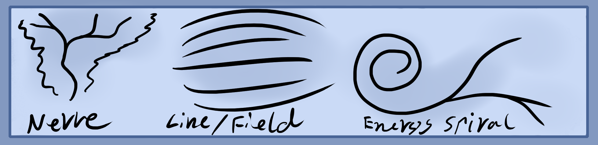

In animals, their brains and nervous systems act as the electromagnetic organs. Similarly to how digestion relates to the fire element, breathing organs to air, urinary to water and excretory to earth.
The electromagnetic element in the body acts as an aura of energy that connects everything and is a commanding center which all sensory data travels and is processed in. Simply put, the mid head center in the center of your brain, also known as the third eye chakra is the main sensory area. Meaning that your sight, smell, taste, touch and hearing travel back to here as well as imaginary impressions and experiences.
So that means if this area takes in data, it can also send it out. Think of this space like a radio station that receives and sends signals, namely mental signals or thoughts which is why you can connect with others in a mental way or read their thoughts.
Magical strength or the ability to exert mental pressure is housed within the mid head center. It draws power from the body in order to function.
The body converts foods, heat, air, liquids and mental pressures like conversation and entertainment into a form of vital energy which fuels the body. This vital energy then sublimates or transmutes upward from the belly into the brain. We can call this mental energy mana.
Electromagnetism usually comes in two main forms. One is a more condensed line form of electrostatic, the other an expanded outward field form of magnetism. You can think of the nerves as the linear form while the field that those nerves create around the body, organs, etc is the magnetic form.
The more tensed this energy becomes the more linear and thin it becomes like lightning. When you relax it the energy becomes larger and more magnetic.
